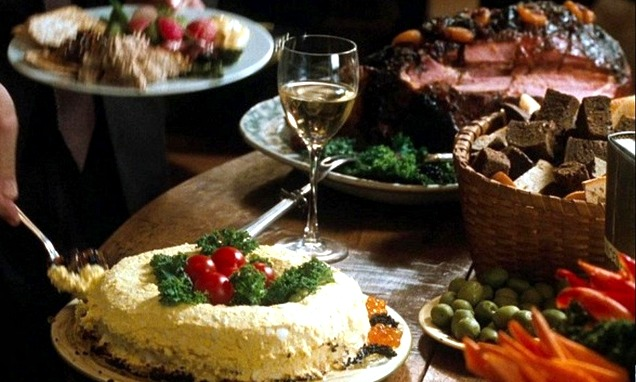

Order at the counter, we bring it to you
The Menu
FOX& SONSBOOKS
From the kitchen
Toasted mini bagels3.25
Three to an order, spread with cream cheese whipped with scallion and cracked pepper.
Pressed turkey and brie6.50
Cranberry sauce on buttered sourdough, griddled until the cheese runs.
Chicken noodle soup3.50
Simmered all morning with carrot, celery and dill. With a roll.
The bakery case
New York cheesecake3.95
Baked rich and dense, chilled overnight, with sugared strawberries.
Chocolate chip cookie1.25
Big and chewy, out of the oven every morning.
Book party platters
Smoked salmon on cucumber24.00
Two dozen, with dill cream cheese, capers and cracked pepper. Order two days ahead.

From a book party spread. The roe is a garnish.
Welcome to the neighborhood
Take any book off the shelf, bring it to your table and stay as long as you like. We will keep the coffee coming. Dogs wait outside, except Brinkley.
Joe Fox
Free hot cocoaCLIP
With any picture book bought at Saturday story hour. Good through December 31, 1998.
STAFF PICK
Pride and Prejudice
Jane Austen. Paperback, 5.95
Fox & Sons Books, Broadway. School supplies on the lower level.Prices subject to change. FB-152